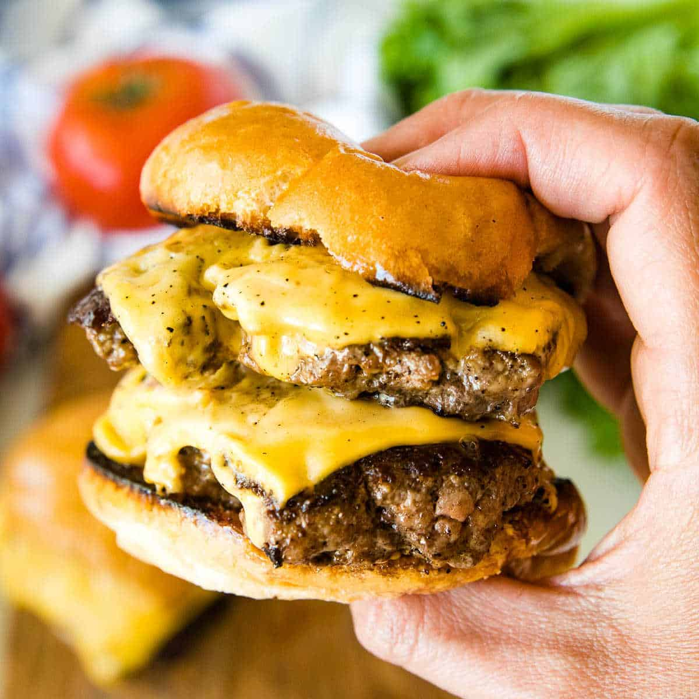

Mike's Easy Burger Sauce

Amplify your burger with this creamy concoction!
This recipe stemmed from my exploration of smash burgers. I knew something was missing when I made them... But what?
The sauce! No matter what I did, I neglected the most important thing. If you don't have a good sauce, your burger will be lackluster.
Give this one a shot. You won't regret it.
Ingredients
- 1/4 of a small onion, grated
- Worcestershire sauce
- Kewpie Mayo
- Hot Sauce
- Yellow Mustard
- Ketchup
Steps
- Start the base of your sauce with a majority of it being kewpie mayo, place in bowl
- Add hot sauce, to taste
- Add a light amount of Worcestershire sauce. The more you add, the more smokey.
- Add a small amount of mustard, to taste. The more you add, the more tart.
- (optional) Add a light amount of ketchup if you like your sauce on the sweeter end.
- Grate your 1/4 onion finely, where its almost all juice and a lump of onion into the sauce.
- Stir ingredients together, adjust to taste as needed. Can be stored in the fridge for as long as your mayo lasts!